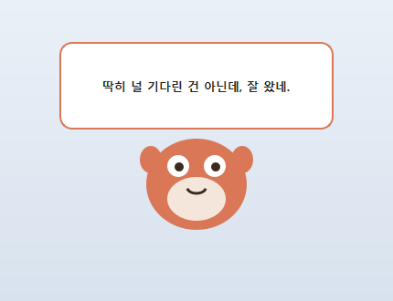
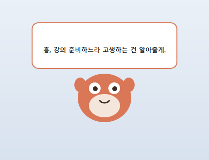

내 PC에서 도는 —
진짜 프로그램(.exe.app)
PySide로 창을 그리고, PyInstaller로 묶어 —
더블클릭하면 열리는 나만의 프로그램.
웹페이지였다면, 이제는 내 PCMac에 사는 프로그램
웹페이지는 인터넷에 삽니다.
이번엔 — 내 PCMac에 사는 프로그램.
더블클릭하면 — 내 캐릭터가 산다.
이번에 만들 건 웹페이지가 아닙니다. 바탕화면 위에 항상 떠 있는 진짜 프로그램(.exe.app) — 클릭하면 내가 길들인 Claude가 말풍선으로 한마디 건넵니다. 파일 하나로 친구한테 보낼 수도 있습니다.
검은 터미널에 — 버튼과 창을 입힌다
CLI — 터미널 그대로.
GUI — 같은 claude에 창을 입힌 것.
3장의 가위바위보·변환기도, 매일 쓰던 claude도 — 전부 검은 터미널이었습니다. 이번엔 거기에 캐릭터와 말풍선을 입힙니다.
PySide로 창을 그리고, PyInstaller로 묶는다
PySide6 — 창을 그린다
파이썬으로 창·버튼·입력칸을 그리는 도구. Qt라는 유명한 GUI 도구의 파이썬 버전.
- "이 버튼을 누르면 ~" 만 짜면 됨
- 코드는 Claude가 — 우리는 무엇을 만들지만
- 운영체제 그대로의 모양 — 윈도우다움맥다움
PyInstaller — .exe.app로 묶는다
파이썬으로 만든 .py 파일을 .exe.app 한 덩어리로 묶어줍니다. 파이썬이 없는 PC에서도 그대로 동작.
- 명령 한 줄 —
pyinstaller --onefile --windowed - 한 번 묶는 데 1~2분 — 시간이 좀 걸림
- 파일 하나로 친구한테 보내기 (같은 OS끼리)
둘 다 명령 한 줄로 설치. 코드는 Claude가 씁니다 — 우리는 무엇을, 어떻게 동작할지만 말합니다.
두 도구 설치 — 한 줄이면 끝
Python — 이미 깔려 있다
3장에서 깐 Python을 그대로 씁니다. 새 PowerShell터미널 창에서 pythonpython3 --version — 3.x 버전 숫자가 뜨면 OK.
- 안 뜨면 — 3장 Python 설치 슬라이드의 PATH 점검
- 두 도구 설치도 claude에게 — 부탁 한 줄이면 끝
- claude는 1장 그대로 — 로그인돼 있으면 준비 끝
PySide6랑 PyInstaller 설치해줘. 끝나면 잘 깔렸는지 확인까지 해줘.
이때 claude가 실제로 치는 명령은 pippip3 install pyside6 pyinstaller 한 줄(참고). PySide6는 다운로드가 좀 커서(수십 MB) 3~5분 — 끝에 Successfully installed가 뜨면 완료입니다.
이번엔 다 같이 — 클로드 펫을 만든다
무엇을 만드나
바탕화면 위에 항상 떠 있는 작은 캐릭터. 클릭하면 내가 길들인 Claude가 한마디 건넵니다.
- 항상 위 — 어떤 창 위에도 떠 있음
- 클릭 → 말풍선 — "…생각 중" 뒤 한마디
- 성격은 CLAUDE.md — 츤데레 고양이든, 존댓말 비서든
두뇌는 — claude -p 한 줄
1장부터 쓰던 claude를 대화창 없이 한 줄로 부르는 스위치가 있습니다. 펫이 클릭될 때마다 이걸 눌러줍니다.
- 클릭 →
claude -p "성격대로 한마디 해줘" - 대답이 돌아오면 — 말풍선에 표시
- 터미널에 치던 것과 완전히 같은 claude
베이스 펫은 전원이 같이 만듭니다 — 내 마음대로 바꾸는 확장은 실습 뒤에 따로.
폴더 → .py → 동작 확인 → .exe.app
기본 폴더 만들기 — c:\lecture\pet~/lecture/pet (이름은 자유)
Claude로 .py 만들기 — 3문장(목표·제약·내 수준)으로 시작
pythonpython3 pet.py — 띄워 보기 — 막히면 화면 보여주며 다시 대화
PyInstaller로 .exe.app로 묶기 — dist 폴더에 pet.exe.app 한 덩어리
더블클릭 — 끝 — 친구한테 보내봐도 OK
.exe.app로 묶는 건 마지막 단계 — 한 번 묶는 데 1~2분씩 걸립니다. 먼저 .py로 동작이 다 맞춰져야 합니다 — 80%는 .py에서 끝납니다.
앞서 익힌 — 3문장이면 시작한다
목표 · 제약 · 내 수준
프롬프팅에서 익힌 목표·제약·수준 3문장. 데스크톱 프로그램에도 그대로 — 매뉴얼이 없어도 시작이 됩니다.
- 목표 — 무엇을 만들지
- 제약 — PySide6로, .exe.app로 묶을 것
- 내 수준 — "처음이니 설명하며"
바탕화면 위에 항상 떠 있는 작은 펫을 만들어줘. 동그란 캐릭터를 클릭하면 터미널 명령 claude -p "성격대로 한마디 해줘"를 백그라운드로 실행해서, 대답을 말풍선으로 보여줘. 성격은 같은 폴더의 CLAUDE.md에서 읽어줘. PySide6로 만들고, 대답을 기다리는 동안 창이 얼지 않게 해줘. 마지막에 PyInstaller로 .exe.app로 묶을 거야. 나는 PySide 처음이니까 설명하며 진행해줘.
3장에서 배운 CLAUDE.md — 앱 폴더에 성격을 적어두면 그게 그대로 펫의 말투가 됩니다. 뼈대는 늘 같음: "무엇을 / PySide6+.exe.app / 처음이니 설명하며".
.exe.app로 묶기 전 — python으로 띄워보기
왜 먼저 .py?
- .exe.app 생성은 1~2분 — 매번 묶으면 느림
- .py로 띄우면 즉시 실행
- 동작·모양이 다 맞춰진 뒤에 묶는다
대부분의 시간은 이 단계 — Claude와 대화하며 다듬는 시간.
첫 클릭은 5~20초 걸립니다 — "…생각 중"이 뜨면 정상. 동작이 이상하면 그 화면을 캡처해 Claude에게 "여기가 이상해"라고 그대로 보여주면 됩니다.
남이 써도 안 헤매게 — 한 끗
"…생각 중"을 먼저
대답까지 5~20초 — 그동안 말풍선에 "…생각 중"부터 띄웁니다. 반응 없는 프로그램은 고장처럼 보입니다.
실패해도 한마디
인터넷이 끊기거나 claude 로그인이 풀려도 침묵하지 않게 — "오늘은 말이 안 나오네…" 같은 대체 문구를 넣습니다.
항상 위 + 트레이
펫답게 어떤 창 위에도 떠 있게, 종료는 작업표시줄 트레이메뉴 막대 우클릭으로 — 이름·아이콘까지 붙이면 한 끗 더.
한 번에 다 안 짜도 됩니다 — "생각 중 표시랑 실패했을 때 문구도 넣어줘"라고 Claude에게 한 줄 부탁하면 알아서 붙습니다.
PyInstaller — 한 줄로 .exe.app 완성
실제로 일어나는 일 (참고)
claude가 대신 치는 명령은 pyinstaller --onefile --windowed pet.py — 진행 메시지가 쏟아져도 가만히 1~2분.
- 결과는
dist\pet.exedist/pet.app하나 — 성격 파일(CLAUDE.md)도 옆에 복사 - 같은 OS의 다른 PC에 옮겨도 동작 — 파이썬 없어도. (Win↔Mac은 따로 빌드)
--onefile= 한 덩어리,--onedir= 폴더로 분산(더 빠른 실행) ·--windowed= 실행 시 검은 콘솔 창 안 뜨게 (완성본은 켜기)
pet.py를 PyInstaller로 더블클릭해 실행되는 .exe.app 한 덩어리로 만들어줘. 성격 파일 CLAUDE.md도 결과물 옆에 복사해줘. 끝나면 실행해서 보여줘.
명령·옵션은 외울 필요 없습니다 — 왼쪽 카드는 claude가 대신 쳐 주는 실제 명령(참고)입니다. Mac은 본인이 만든 앱이라 자체 서명 한 줄을 같이 시키면 깔끔 — codesign --deep --force --sign - dist/pet.app.
경고창이 뜬다 — 정상이다.
내가 만든 .exe는 "서명"이 없어 Windows가 한 번 멈춰 묻습니다. 모르는 인터넷 .exe였다면 조심할 일이지만, 방금 내가 만든 거니 — "추가 정보" → "실행".
내가 만든 .app은 "서명"이 없어 Gatekeeper가 한 번 멈춰 묻습니다. 모르는 인터넷 앱이었다면 조심할 일이지만, 방금 내가 만든 거니 — Finder에서 우클릭 → 열기(첫 실행 1회).
codesign --deep --force --sign - dist/pet.app더블클릭하면 — 이런 창이 뜬다


성격이 다르면 말도 다릅니다 — 옆자리 펫과 비교해보세요. 경고창이 뜨면 "추가 정보 → 실행"첫 실행은 우클릭 → 열기.
성격부터 정하고 — .py → .exe.app까지
폴더 만들고 — 성격 3줄 — c:\lecture\pet~/lecture/pet의 CLAUDE.md에 (3장 방식 그대로)
3문장 프롬프트로 pet.py — 목표·제약·내 수준 (앞 슬라이드에서 복사)
.py로 띄워 다듬기 (2~3바퀴) — 클릭해 말풍선 확인, 어색한 곳을 그대로 말해 고친다
pyinstaller --onefile --windowed — 끝나면 CLAUDE.md를 dist에 복사, dist\pet.exedist/pet.app 완성
더블클릭 + 옆자리와 비교 — 경고창은 "추가 정보 → 실행"우클릭 → 열기
막히면 — 에러 메시지나 이상한 화면을 그대로 캡처해 Claude에게 보여주세요. 80%는 그 자리에서 풀립니다.
베이스는 같아도 — 내 펫은 다르게 큰다
혼자 말하기
30분마다 스스로 한마디 — "타이머로 주기적으로 말하게 해줘" 한 줄.
스킨·표정
색·모양·눈 깜빡임 — 내 캐릭터로 다시 그리기.
성격 여러 벌
CLAUDE.md를 갈아끼우면 다른 펫 — 우클릭 메뉴로 전환.
방명록 알리미
5장 방명록에 새 글이 오면 펫이 알려준다 (Supabase).
날씨·시세 한마디
4장 공개 API를 읽어와 "우산 챙겨" — 아침 브리핑 펫.
내 작업 리모컨
6장 크롤링 스크립트를 펫 클릭 메뉴에서 실행.
방명록 알리미는 5장을 완성한 사람용 — 아니면 날씨부터. 확장도 늘 한 번에 하나씩, 2~3바퀴 다듬으며.
자주 걸리는 — 5가지 + 해법
pippip3 install pyside6를 그 PowerShell터미널 창에서 한 번 더.claude -p "안녕"부터 — 로그인·인터넷 문제면 여기서 걸립니다.pythonpython3 pet.py를 PowerShell터미널에서 직접 실행하면 에러가 남음 → 빨간 줄을 통째로 복사해 Claude에게. 빌드 에러도 같은 방법.codesign --deep --force --sign - dist/pet.app. 슬라이드 13 참고.xattr -dr com.apple.quarantine dist/pet.app 한 줄로 풀림. (다운로드한 앱에 macOS가 붙이는 속성)내 PC에 — 진짜 프로그램이 생겼다
웹페이지는 인터넷에 살지만, 펫은 내 컴퓨터에 삽니다. 파일로 친구에게 보낼 수도, 작업표시줄Dock에 고정할 수도 있습니다.